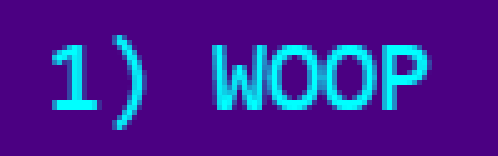

Stage 8 - Spells
If you try playing the game a bunch you might notice it's weighted a bit in the monster's favor. The player bump attack is limiting and not especially exciting. In my opinion, what really makes a broughlike special is your abilities or spells. You can see this especially in 868-HACK and Cinco Paus. Proper use of spells is what adds most of the depth and personality.
There's 15 spells in this section to demonstrate the diversity of what can be done with very little code. What I want to stress is: it's your game now. Do all 15 if you want, or pick and choose a few, or go off and implement something completely different. It's up to you.
First, let's write a single spell to give you an idea of what that looks like. Then we'll knock out the framework for casting spells and lastly I'll show you the rest of the 15 spells one by one.
spell.js
We're going to store our spells in an object literal called, unsurprisingly,
.
warps the player to a random passable tile. This
function has a one line body. Pretty simple huh?
Notice the function operates on the
object. All of our spells will be player-cast, but it's not hard at all to have spells castable by either players or monsters by passing in a "caster" entity and applying everything to that. I'll leave that as an exercise for the reader.
We're going to let the player select spells with the number keys 1-9.
index.html
Here's an interesting example of JavaScript's type coercion. The value
will come in as a string like "2".
Is the string "2" greater than or equal to 1? Strictly speaking, that doesn't make any sense, but JavaScript will try to make it work anyway. Your "2" will be coerced into the number 2 and then you
can try comparing it with 1.
So if the pressed key is 1-9, we're passing that key number minus 1 (type coercion comes into play yet again) to a new function called
. That number will represent an index into our array of spells. We're subtracting 1 because array indices start at 0 instead of 1.
Spell framework
Now we'll add the code to load the player spells, add a new spell, and cast them. The player will initially start out with a single spell and will gain additional spell slots through acquiring treasure.
First let's initialize
so that the player starts out with a single spell.
game.js
Then the bulk of the code to handle adding/casting spells:
monster.js
It's sometimes confusing to see different variables with the same name, so let's make sure we understand the difference. The global object
holds the spell functions. The player
spells
(shown above as
)
is an array of spell
names, which we can use to index into the global object. It's an inventory of sorts.
The new line in our player constructor does quite a bit...
-
gets all the spell names
-
shuffles them
-
grabs some number of spells from that shuffled list using
-
assigns them to
The method
looks similar, but it only grabs one random spell and then adds it to the player spells array.
The method
takes an index (remember the player pressing 1-9 earlier?) and tries to find that index in the player spells array. It may not exist, which is OK! That's why we do a check on the result.
If found, we
the element and leave an empty array slot. We call the spell function, play our spell sound, and do a
.
You could also skip the tick if you don't want monsters to act after a spell is cast.
Drawing spells
Now let's draw our spell list on the sidebar:
game.js
If your recall the way we used
before, this should be pretty straightforward... with the exception of the expression:
(i+1) + ") " + (player.spells[i] || "")
We're adding 1 back to our spell index to make it like normal human counting, adding a parentheses and space, and then adding the spell name.
If the spell has been deleted, we want to handle that with the "OR" operator
and instead simply add an empty string. You don't need to know all the details of how
works here (some more type coercion is involved), but I will say it's kind of like the English word "or". Do the first thing
or, if that doesn't work, do the second thing.
The result with our first spell should be:

TEST IT OUT
Gaining new spells
Let's connect spells to treasure.
tile.js
Every 3 treasures acquired results in a new spell all the way up to 9 slots.
So that's the framework in a nutshell. Let's try it out.
The only thing that doesn't work right now is you don't get to keep extra spells between levels, since there is only one spell.
We'll fix that soon enough.
Spell 2: QUAKE
For this spell only, I'll show the surrounding code. But all the spell functions will be added as properties of the spells object in the same way: add a comma after the last function, break to a new line, then add the new function.